O objetivo do site é mostrar o desenvolvimento de projetos como programação e projeto de eletrônica, a baixo temos demonstração de projetos em desenvolvimento.
Canal do YouTube

projeto 1:tela de desenho✏️
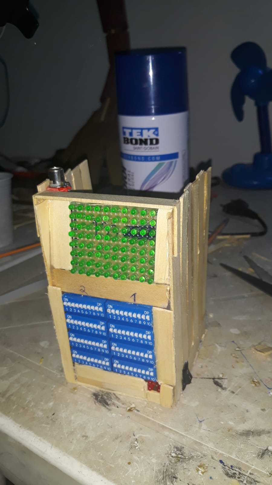
O objetivo do projeto conseguir desenhar com as leds, veja a baixo um exemplo
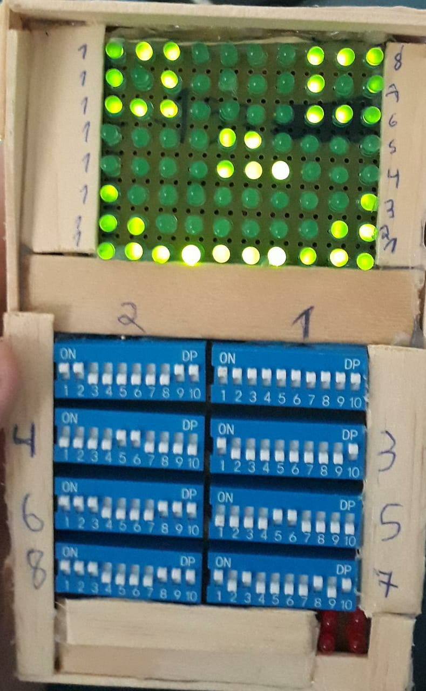
Como funciona ? bem através dos dip switch conseguimos acender as leds individualmente, com isso formando a possibilidade de fazer qualquer desenho através do ligar e desligar de uma led

Projeto 2:robo fredy🤖
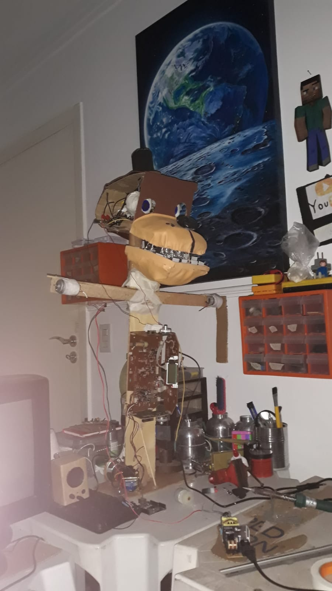
Esse robo tem a função de imitar o personagem fredy do jogo FNAF
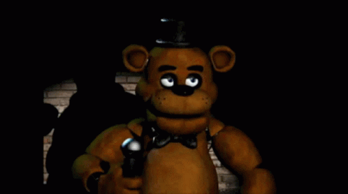
Cabeça se mexendo
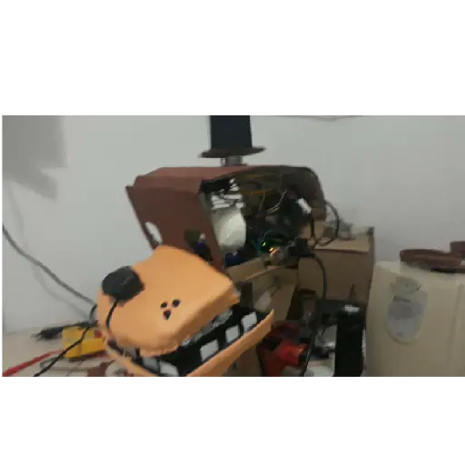
Projeto 3:computador caseiro 🖥️
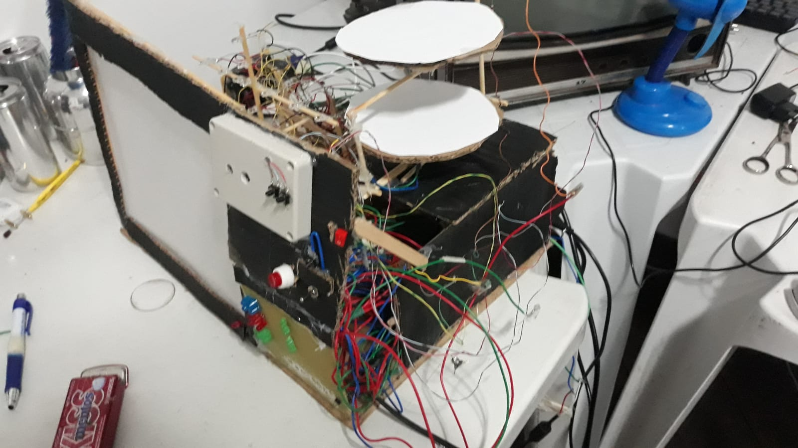
O CRM=computador de registro e monitoramento conta com um sitema capaz de medir a luminosindade solar calcular quantos litros de água choveu no dia e muito mais
Video do projeto
Projeto 4:osciloscópio📺
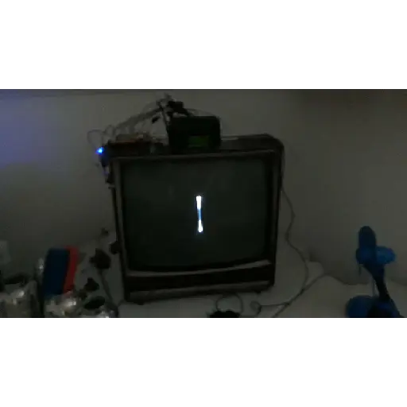
Osciloscópio:O objetivo é mostrar ondas eletromagnética e seu comportamento
Video do projeto
Projeto 5:chip caseiro ⚙️
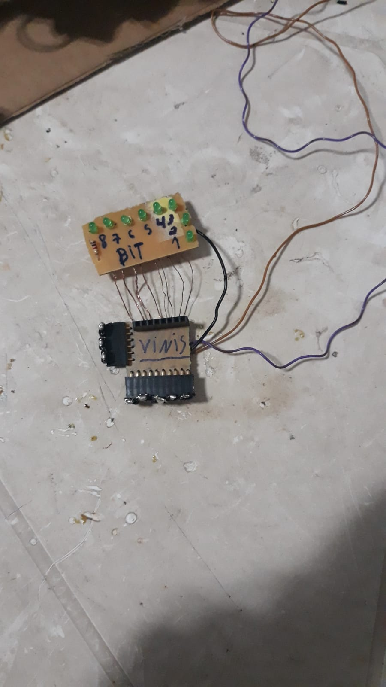
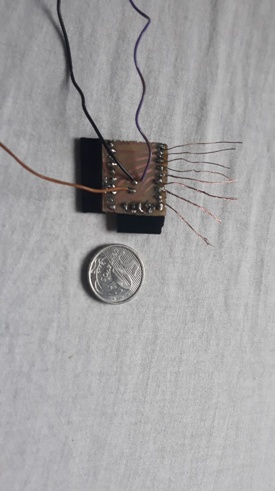
Objetivo é armazenar 8 bits de informação com isso tendo a possibilidade de armazenar informação,com um tamanho incrível de uma moeda de 50 centavos
Video do projeto
Projeto 6:computador melhorado
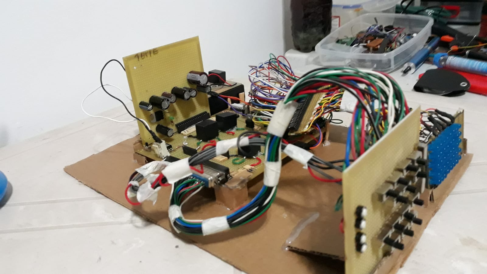
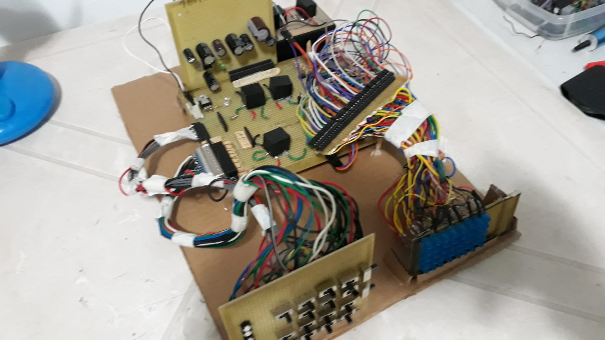
O objetivo desse computador não é específico, mas dependendo da sua necessidade esse computador tem a capacidade de se adaptar.
Video do projeto
Muito obrigado pela atenção até aqui, cada novo projeto irei atualizando a página caso queira algo mais detalhado fique por dentro do meu canal no YOUTUBE.
Canal do YouTube
Caso tenha achado o meu trabalho legal e queira contribuir Pix=EM BREVE
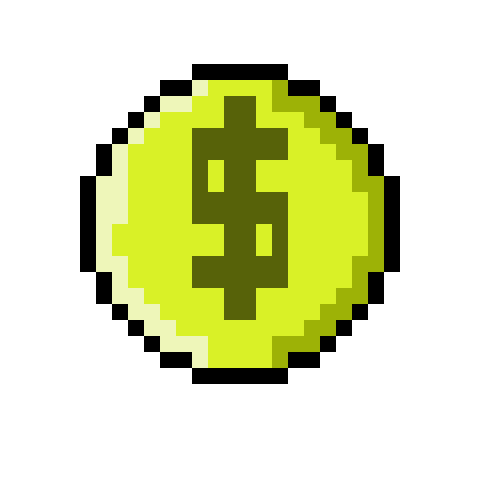